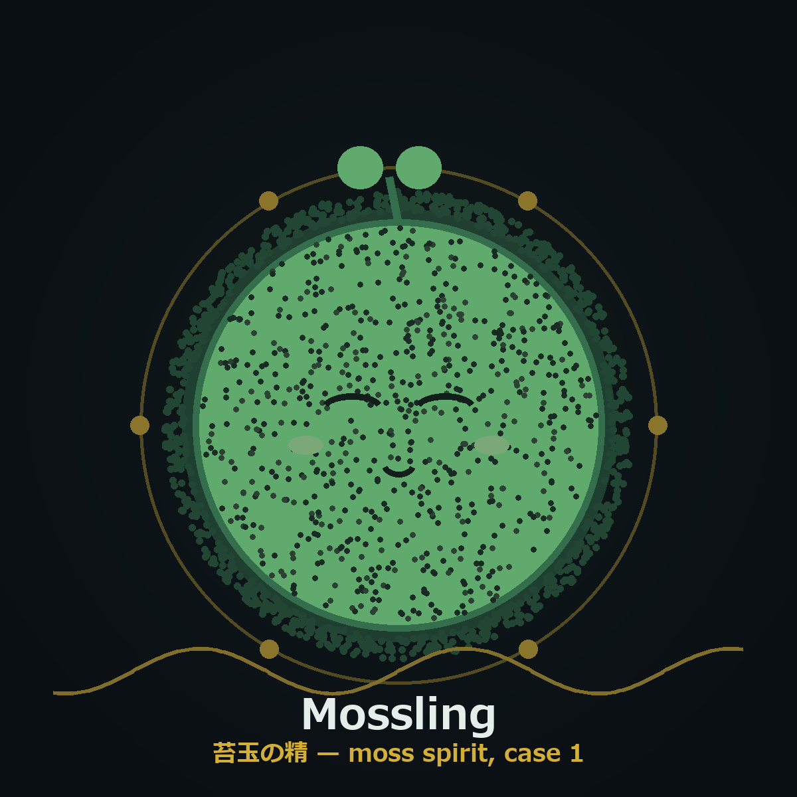
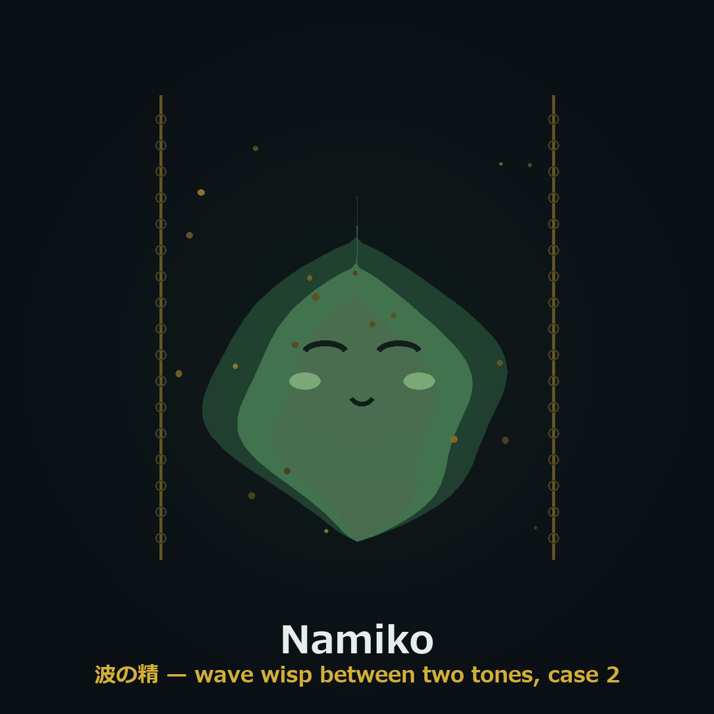
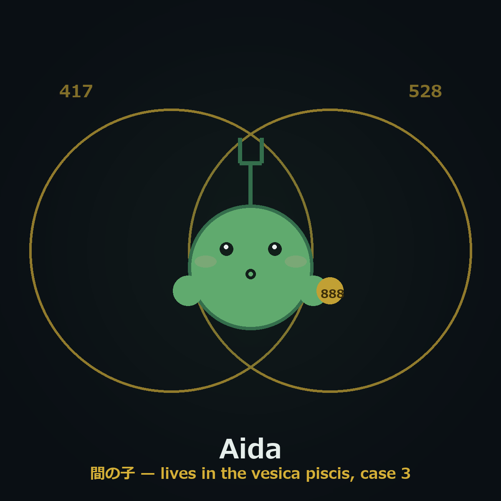

hazama — release preview
27曲(9周波数 × 3アルバム)の60秒試聴クリップ。フル尺はリリース版(44.1kHz/16bit)のみ。全曲自己合成・決定論レンダリング。
Pure=睡眠向け純音ドローン(各10分) / Drift=アンビエント(各~9:40) / Groove=チルビート(各~3:15)。🎧推奨。
YouTube 長尺サンプル
528 Hz Pure - 1時間版 (YouTube用MP4そのもの・92MB)
回転する神聖幾何学 - アニメ視覚案のテスト (18秒ループ・音なし)
キャラクター・コンセプト(3案・オリジナル)
「周波数と周波数のあいだに棲む緑の精霊」。全案自作(権利クリーン・Pepe非派生)。
案1 Mossling(苔玉の精)
案2 Namiko(波の精)
案3 Aida(間の子)— ヴェシカ・パイシス(2円の重なり=間)に棲む
Pure Solfeggio Sleep
Solfeggio Drift
Solfeggio Groove